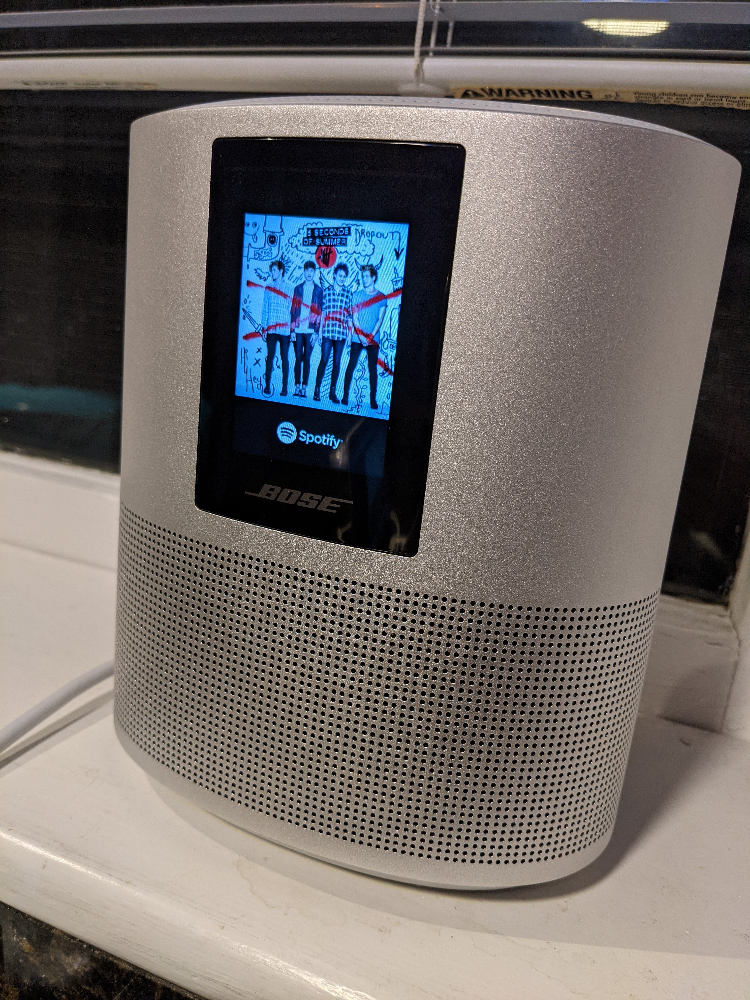

Table of Contents
1 はじめに
日本では37インチのプラズマテレビを使っていましがたが、ボストン近郊に来て55インチくらいのテレビを買うつもりでいたところ、家族の反対があって、しばらくはテレビ無しで過ごしていました。
映画を見るためにプロジェクターなら買っても良いという許可が出たので、去年の5月にViewSonicのPX706HDというショートスロータイプのプロジェクターを買いました。
大画面で映画を見るなら、音もそれなりに迫力が欲しいものです。半年ほどYamahaのNX-A01という古いポータブルスピーカーで我慢していましたが、このたびBoseのHome Speaker 500という比較的ポータブルなスピーカーを買ったので、簡単にレビューしたいと思います。

2 Bose Home Speaker 500
2.1 選んだ理由
プロジェクター用と普段のBGM用として使いたかったので、当初考えていたサウンドバータイプのスピーカーは止めました。投影する画面(リビングの壁です)近く、つまりプロジェクターからは遠くに設置することになるため、配線が汚くなりそうなのと、普段のBGM用として、持ち運び可能な方がよいためです。
ポータブルという意味で、昔から欲しかったBoseのSoundLinkシリーズやPortable Smart Speakerも考えましたが、音質(や音量)を重視して電池駆動ではないHome Speaker 300/500に目を付け、より音質の良い500の方にしました。
Bluetoothはテレビ用スピーカーとしては遅延が致命的な問題になりそうだったので、AUX接続できることも条件としました。Home Speaker 500はAlexa/Google assitantに対応していますが、それらは条件ではありませんでした。
2.2 音質
Boseにしては低音域がそこまで強調されておらず、むしろ中音域の人の声が聞き取りやすくて好感の持てる音です。プロジェクター用としては十分合格です。低音があまり強調されていないといっても、あくまでBoseにしては、ということであって、迫力に欠けるわけではありません。低ボリュームで音楽を聴いていても十分低音は聞こえてきます。
2.3 ポータブルスピーカーとして
電池駆動タイプではないこともあり、ポータブル性は今ひとつです。重量も2.15kgあり、サイズの割にずっしりとしています。電源コードを抜くと、次に立ち上げたときにWifi接続を待たないといけないため、音楽再生できるようになるまでに30秒ほどかかります。もちろん、再生中だった曲は忘れてしまいます。
我が家での設置場所は、定位置であるリビングのdrawer上、プロジェクターの側、キッチンの窓際の3カ所で、一日に2,3回くらい移動しています。これくらいならそれ程苦にはなりません。接続しなければいけないのが電源ケーブルのみなのが思ったよりも大きいです。
2.4 スマートスピーカーとして
音楽はMacからyoutube musicにアップロードしてある曲をAirPlayで飛ばして聴くか、スマホ/MacからSpotifyの曲をキックして聴いています。Home Speaker 500には小さな液晶ディスプレイが付いていて、再生中の曲のジャケットイメージを表示できるのですが、何故かMacからAirPlayでyoutube musicの曲を飛ばすとイメージが表示されません。iPadから飛ばすと表示されるのですが。。
面白いのはSpotifyの再生です。私の使っているスマホ、GoogleのPixel 4はもちろんAirPlayに対応していないのでBluetoothで曲を飛ばすしかできない筈ですが、Pixel 4上のSpotifyアプリから曲を再生すると、何故かHome Speaker 500にジャケットイメージが表示されます。それどころか、Pixel 4上でSpotifyアプリを終了させても、音楽再生は止まりません。
どうやら、Pixel 4(やMac)からの曲の再生は、ストリーミングで飛ばしているわけではなく、単に曲の再生をキックしているだけのようです。つまり、ストリーミング再生自体はSpotifyのサーバーから直接Home Speaker 500に行われていると思われます。
Youtube musicやSpotifyでの曲の再生はやや不安定で、気がつくと再生が止まっていることがあります。大抵は再度再生すればよいのですが、まれにいったんスピーカーの電源をオフにしないと復活しないこともあります。
Alexaによるボイスコントロールは使いづらいので、マイクをずっとオフにしています。ボイスコントロール経由だとプレイリストが指定できない(?)のが致命的です。聴きたいアーティストと違う曲が勝手に選ばれます。Alexa的には似たようなリストを探してきたつもりのようですが。。。
3 終わりに
しばらく前から価格が$100下がって$299になっていたために年末に半ば衝動買いしたBoseのHome Speaker 500ですが、とてもよい買い物だったと思います。音質面でもポータブル性でも十分満足しています。
難点を挙げるとすると、音楽再生時の不安定さと、クラウドからの直接再生がSpotifyとAmazon music(たぶん)くらいしか対応していないことがあります。両方ともソフトウエアのアップデートで改善されることを期待して待っています。